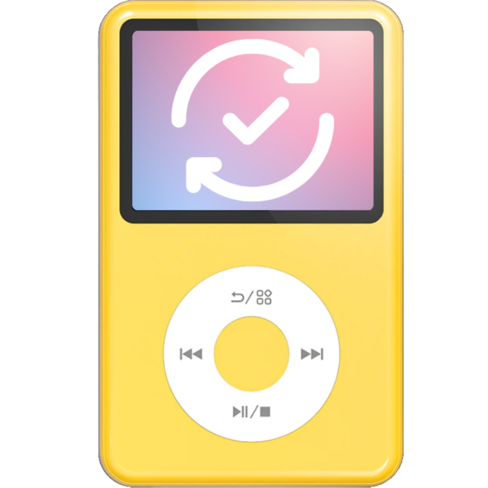

Aktualizacje oprogramowania i firmware
Zainstaluj oficjalne oprogramowanie, przywróć odtwarzacz do życia albo wypróbuj stworzony dla niego system społeczności.

Poradniki i instrukcje społeczności
Dostępne wydania oprogramowania
| Oprogramowanie | Wydania |
|---|
Czym jest Innioasis Updater CE?
Innioasis Updater CE to narzędzie open source, które upraszcza aktualizowanie i przywracanie odtwarzacza w systemach Windows, macOS i Linux.
Wgrywanie przez Updater CE zachowuje Twoją bibliotekę muzyczną, kolekcję wideo i sparowane urządzenia Bluetooth, a każdy krok jest opisany na ekranie.
Obsługiwane modele urządzeń
Innioasis Y1 & Y2
Oficjalne oprogramowanie, pliki przywracania i niestandardowe systemy, w tym Rockbox, Better-Y i Solar.
Innioasis G1, G3 & G5
Oficjalne oprogramowanie i pliki odzyskiwania dla modeli z ekranem dotykowym. Przywróć fabryczne aplikacje lub napraw „cegłę”.
Innioasis R1 & PR1
Oryginalne oprogramowanie i pliki odzyskiwania dla dedykowanych odtwarzaczy audio.
Timmkoo A5, Q5 & Q3
Updater CE obsługuje paczki przygotowane dla odtwarzaczy Timmkoo.
Korzystanie z Innioasis Updater
Sprawdź swój model
Sprawdź model wydrukowany z tyłu urządzenia. Paczki dla Y1 i Y2 są różne.
Wybierz oprogramowanie
Wybierz wersję pasującą do Twojego odtwarzacza.
Zainstaluj lub przywróć
Updater przygotowuje archiwum i informuje Cię, kiedy podłączyć odtwarzacz.
Pierwsze kroki z Rockbox
Zainstaluj Rockbox na Y1
Wybierz Y1, wskaż stabilnego Rockboxa i podłącz odtwarzacz dopiero wtedy, gdy aplikacja o to poprosi.
Zainstaluj Rockbox na Y2
Wybierz Y2 w narzędziu. W przypadku Y2 używane są pliki binarne przeznaczone dla tego sprzętu.
Przywróć fabryczne oprogramowanie
Powrót do fabrycznego oprogramowania przebiega tak samo: wybierz swój model i wybierz Original Software.
Wesprzyj Updater i Galerię motywów
Innioasis Updater i Galeria motywów to niezależne projekty utrzymywane przez społeczność i jednego dewelopera. Jeśli te narzędzia pomogły Twojemu odtwarzaczowi, rozważ wsparcie hostingu serwera i jego utrzymania.